02
连接与紧固
零件之间如何连在一起：卡扣、螺丝与嵌件、卡口、滑轨、磁吸、胶粘、焊接等。 本类共 61 篇。
螺纹与嵌件 21 篇
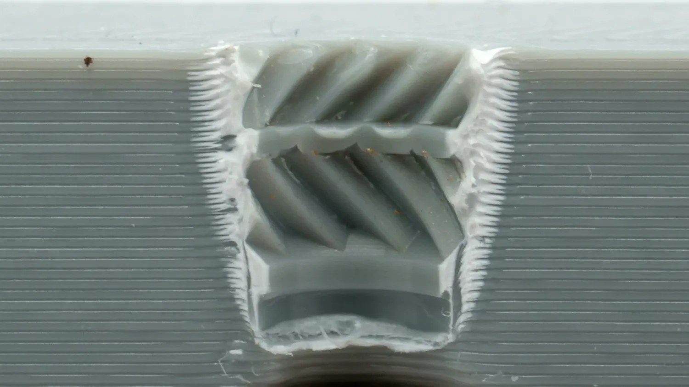
3D 打印件热熔铜螺母：孔径与拉拔力实测
CNC Kitchen 把近 50 颗 M3 热熔铜螺母熔进 3.6–4.6 mm 不同孔径的 PLA 试样并逐个拉出：小孔时拉拔力约 1400 N，孔径变大先缓降后「断崖」；打印孔普遍比 CAD 小约 0.25 mm，所以 CAD 画 4.2 mm 是甜点——能预放、背面不起毛刺、强度仍约为最大值的 90%。

EJOT Delta PT 塑料用三角齿自攻螺丝：底孔 0.8·d1、20° 牙侧角与应力释放沉孔
Delta PT 是专用于热塑性塑料的自攻螺丝：主牙形角 20°（相对普通 60° 机牙侧角更窄），把塑料挤向牙侧而不是径向撑裂薄壁；Bossard 中文资料给出常用塑料的导向孔 d = 0.8·d1、孔口应力释放孔 de = d1 + 0.2 mm、柱体外径 D = 2·d1、螺纹配合长度 te = 2·d1，并且孔径不宜超过 0.88·d1。库中已有的 Boss 柱篇讲柱壁厚比和通用自攻底孔，本篇主角是这套专用牙型与孔口结构。

Nord-Lock 楔形防松垫圈：楔角大于螺纹升角的成对拉伸锁紧
Nord-Lock 原厂楔形锁紧垫圈成对使用：相互贴合的一面是楔形凸轮，朝向螺头/螺母和被连接件的一面是径向细齿。因为楔角 α 大于螺纹升角 β，螺栓一旦有松转趋势，就会沿凸轮面把一对垫圈撑开、进一步拉伸螺栓、增大夹紧力——这是**靠拉伸（tension）锁紧**，不是靠弹簧垫圈的弹力，也不是靠尼龙圈摩擦。钢垫圈（EN 1.7182）规格大约 M3–M130，硬度 ≥ 465 HV1，推荐温度 −50 °C 到 200 °C；垫圈必须比接触面硬。

PEM 与 Southco 防脱落面板螺丝：拧松后留在盖上，HP EliteBook 845 G8 五颗底盖钉
防脱落（captive）面板螺丝把螺钉限制在盖板的固定座或导套里：螺纹拧出啮合后，螺丝仍留在盖上，并可在弹簧作用下缩回；HP EliteBook 845 G8 的底盖就用五颗这类十字槽螺丝，拧松但不取出，再沿铰链侧解开卡扣即可开盖。

Spiralock 楔形底 30° 防松内螺纹：牙顶楔入斜面消除径向间隙
Spiralock（施必牢）把防松做在**内螺纹牙型**上：牙底有 30° 楔形斜面，仍与标准 60° 外螺纹兼容。自由旋入时螺栓可以较轻松地拧到位；一旦施加预紧，螺栓牙顶楔入这道斜面，径向间隙被消除，横向微动被限制，啮合各牙的载荷也更均匀。这既不是垫圈，也不是尼龙或全金属锁紧螺母的嵌件。Machine Design 转述的研究给出过载荷分配例子：MIT/Daimler-Chrysler 计算中，Spiralock 第一圈承载约 18%、末圈约 9.4%，标准 60° 内螺纹则是约 34.1% 和 3.1%。

TAPTITE II 金属三角挤牙自攻螺丝：按啮合率选底孔
TAPTITE II 是用于延性金属（钢板、压铸件等）的三角截面（TRILOBULAR）挤牙螺丝：三个凸起依次滚压出公制内螺纹，无切屑，并靠金属回弹得到防松的保持扭矩。底孔必须按**螺纹啮合率**和被攻件厚度来选，例如手册示例：M5×0.8 配 4.58 mm 底孔对应 80% 啮合；不要把塑料自攻常用的约 0.8d 底孔直接套过来。冷轧钢板、M3×0.5、板厚 2 mm、底孔 2.75 mm 时，手册给出的攻牙扭矩约 0.35–0.55 N·m，推荐装配扭矩 1.0 N·m（实验室条件，仅作量级参考）。
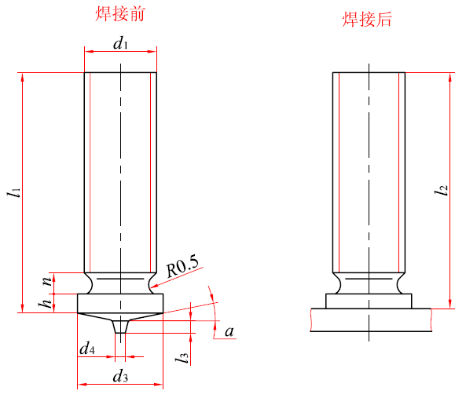
储能焊螺柱（GB/T 902.3 PT/IT）：电容放电把焊接端熔到板面
储能（电容放电）焊螺柱把电能预先充进电容，焊接时在约 1–3 ms 内一次放完，将螺柱焊接端的尖端和工件表面熔化，再在压力下浸入熔池。GB/T 902.3—2008 的 PT 型是外螺纹焊柱：焊接端有台阶（d3）和引燃尖（d4、l3、α），焊后长度 l2 ≈ l1 − 0.3 mm；IT 型则是内螺纹焊柱。鸿栢科技的工艺文写明：焊枪把螺柱**紧压在工件表面上**放电，最小板厚约为螺柱直径的 1/10，适合焊直径 3–10 mm 的螺柱；热输入小、背面印痕最小，但不适合热轧厚板。与压铆螺钉对照：压铆要预先冲孔、靠冷流机械互锁；本结构通常在打开来源中**没有要求预先通孔**。
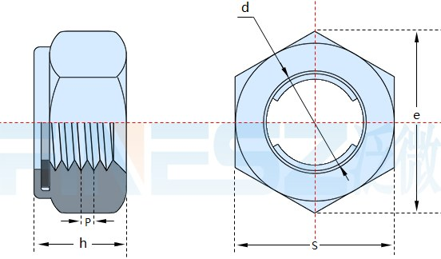
全金属锁紧螺母（DIN 980）：三点变形与金属嵌片的预紧力矩防松
全金属锁紧螺母不靠尼龙，而靠金属干涉产生预紧力矩：DIN 980 V 型是单体，把螺母上部螺纹做成三点压点、椭圆或侧面挤压；M 型是两件式，内嵌热处理金属锁片，锁片内径略小于螺栓外径。耐温高于尼龙嵌件螺母，但锁紧力矩会随重复拆装衰减，且 DIN 980:1987 本身已被废止，新图应核对应的 ISO 7042 / ISO 10513 等现行标准。
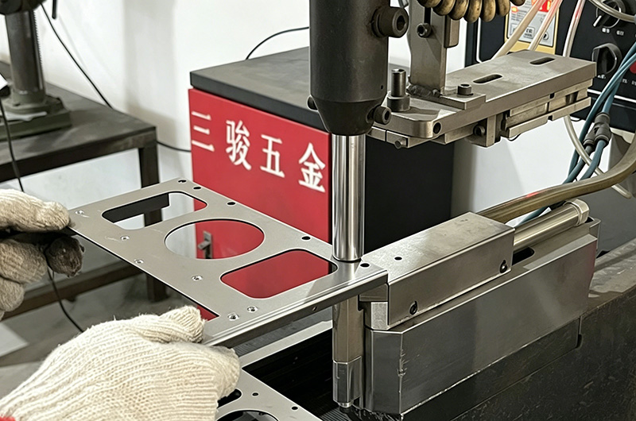
凸焊螺母：在薄板上投影焊接螺纹，对照压铆螺母与攻丝
凸焊螺母是把带凸点的螺母投影焊接到薄板上，由焊缝承担拧紧和推出载荷；它和压铆螺母、拉铆螺母、板内攻丝解决的是同一类「薄板上要有螺纹」的问题，但可达性、板材、涂装顺序和维修性不同，不能只按螺纹规格选型。

台阶螺丝（ISO 7379 塞打螺丝）：光杆定位、螺纹只锁紧
台阶螺丝（shoulder bolt / shoulder screw，模具里常叫塞打螺丝或 stripper bolt）沿轴向分成三段：头部、精密磨削的无螺纹肩部、以及直径更小的螺纹。径向定位和转动/滑动都靠肩部与孔的配合（常用孔 H7、肩 h6），螺纹只负责把螺丝锚在基体里，不负责定心。肩长必须等于或略大于需要活动的零件厚度（AIMS 写通常大 0.1–0.3 mm）：太短则头部把零件夹死，太长则轴向窜动。ISO 7379 的常用对应关系例如：肩径 10 mm 配 M8 螺纹，肩长系列 12–100 mm。

尼龙嵌件锁紧螺母（DIN 985 Nyloc）：预紧力矩、120°C 上限与安装方向
Nyloc（尼龙嵌件锁紧螺母）在六角螺母顶部压入一圈内径略小于螺栓外径的尼龙环：螺栓先穿过金属螺纹，再挤入尼龙，尼龙弹性变形产生与夹紧力无关的预紧力矩（prevailing torque），用来抵抗振动松动。标准尼龙大约在 −40 °C 至 +120 °C 保持抓力；超过约 120 °C 会软化，持续高于 130–140 °C 会永久变形。必须从金属螺纹端旋入，让尼龙环最后啮合。

开口弹簧垫圈防松失效（反面案例）：压平后在横向振动中几乎无效
开口螺旋弹簧垫圈被广泛当成“防松件”，但在横向振动（Junker，DIN 65151）里几乎没有防松作用，有时还会加快松脱。原因很直接：拧到目标预紧后垫圈已经被压平，弹力可以忽略，剩下的只是一片被压扁的开口垫圈。Bolt Science 用 M8 接头做了对比试验，并指出 8.8 级及以上螺栓上，这类垫圈往往在目标预紧的约 10%–20% 就已经压平；1969 年 Junker 的工作已经表明它不能阻止松转。本篇作为反面案例，对照楔形垫圈（拉伸锁紧）和 Spiralock（改变内螺纹牙型）：不要再把弹簧垫圈当防松件。

拉铆螺母（铆螺母）：单面镦头、铆接范围与圆孔滚花及六角防转
拉铆螺母是单面安装的内螺纹紧固件：把它插入预制孔，拉枪螺杆拧入并回拉，薄壁在板背面塑性镦成鼓包，把板夹在法兰和鼓包之间，再旋出螺杆，板上留下内螺纹。和压铆螺母不同，它不靠双面加压让板料冷流进退刀槽，关键参数是**铆接范围（夹持厚度）必须覆盖实际叠层厚度**，以及圆孔滚花（摩擦防转）还是六角孔（机械防转）。

橡胶膨胀螺母（Well nut）：橡胶套筒胀紧孔壁兼隔振
Well nut（橡胶膨胀螺母 / Rubber-Nut）是带法兰的橡胶套筒，一端模内预埋黄铜螺母：把套筒塞进工件孔后，用普通机牙螺丝从法兰一侧拧进铜螺母，橡胶被轴向压缩、径向胀紧孔壁，从而夹紧、并兼有隔振、降噪和一定的隔潮。它与拉铆螺母（金属镦头、基本不可反复当橡胶件那样拆）和卡式螺母（弹簧钢夹板）都不同。Hanson 强调可拆、可在盲孔使用、不需要专用安装工具；ESTCO 给出公制例子：如 10S（M5×0.8）孔径 9.58 mm，握持范围 0.38–4.88 mm，拧紧扭矩 0.56 N·m。

注塑模内预埋铜螺母：模具定位、溢胶风险与直纹及斜花滚花
模内预埋是把铜螺母先套在模具芯棒上，注塑时熔体包住滚花，冷却后与塑件成为一体。它和热熔铜螺母不是同一工序：热熔是成型后再加热压入，预埋发生在注塑当时。结合强度通常最好，但会拉长成型节拍，而且定位不准就会溢胶、堵牙或撞坏模具。直纹滚花更常用于模内（抗拔出好），双斜花/阶梯形更常留给事后热熔，以免攻牙膨胀和溢胶。

钢丝螺套（Helicoil 与 STI 底孔）：菱形钢丝嵌件与专用底孔攻丝
钢丝螺套是把菱形截面的不锈钢钢丝弹簧圈拧进专用 STI 底孔，在软基体或已损坏的螺孔里形成新的标准公制内螺纹。它既不是热熔铜螺母，也不是压铆螺母：底孔必须按 STI 丝锥加工，不能用普通螺纹底孔。M6×1.0 的麻花钻约 6.30 mm（铝件有资料取 6.25 mm），而普通 M6 攻丝底孔只有 5.0 mm；有柄型装完必须折断并取出尾柄。
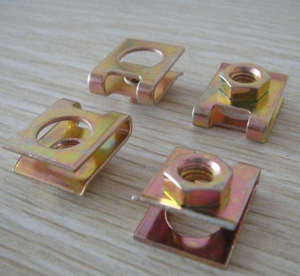
钣金 U 型夹板螺母与卡式笼式螺母：板边夹持与方孔浮动螺纹
夹板类螺母不破坏板孔到不可拆，而是用弹簧钢夹在板边或卡进方孔，给薄板一个可拆、常常还能浮动的螺纹。U 型是两腿等长、对称卡在板边上；卡式/笼式则是弹簧钢笼子里装着方螺母，卡进预制方孔（常见 9.5 mm×9.5 mm），并可在长圆孔里滑动补偿孔位偏差。它和压铆、拉铆都不同：板不被冷流或镦死。
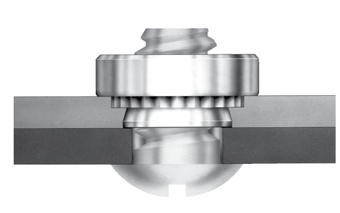
钣金压铆螺母（PEM S/CLS）：孔径、最小板厚、边距与板材硬度上限
压铆螺母（自扣紧螺母）是把螺母放进冲好的孔里，用平行压力压它的头部，孔周围的板料**冷流进螺母的退刀槽**，从而和板子成为一体；滚花环负责防转。PEM 手册给出每个规格的三个硬尺寸：**孔径、最小板厚、孔中心到板边的最小距离**，例如 M3：孔 4.22 mm（+0.08）、最小板厚 0.8–1.4 mm（随螺母杆长代码变化）、孔心到边 4.8 mm。还有一条容易忽略的规则：**板材必须比螺母软**（S 型 HRB 80 以下，CLS 型 HRB 70 以下）。B 站经验文补充了选型逻辑：背面够不着用拉铆，0.8 mm 以下薄铝板别用压铆，1 mm 以上平板用压铆最合适。

钣金压铆螺钉（PEM FH 平头螺柱）：孔径、最小板厚、边距与板材硬度上限
压铆螺钉（平头螺柱）和压铆螺母成对出现：螺母在薄板上留下内螺纹孔，FH 则在薄板上留下外螺纹杆。安装时把螺柱头放进冲好的孔，平行加压，板料冷流进头部下方的压铆轮廓并咬住滚花防转，杆部从背面伸出。PEM 手册给出每个规格的孔径、最小板厚、被连接件最大孔径和孔心到边距离，例如 M3：孔 3.0 mm（+0.08）、最小板厚 1 mm、边距 5.6 mm；板材必须比螺柱软（FH 为 HRB 80 / HB 150 以下，FHS 为 HRB 70 / HB 125 以下）。

钣金压铆隔离柱（PEM SO）：孔径、最小板厚、柱长与板材硬度上限
压铆隔离柱（self-clinching standoff）把带通孔或盲孔螺纹的柱体压进冲好的圆孔，板料冷流进头部下方的槽，在两块板或 PCB 之间给出确定的间距；与压铆螺母不同，它的目的不是“几乎不增加板厚方向的支撑高度”，而是用规定的柱长 L 把两层撑开。PEM SO 通孔型例如 M3：孔径 4.22 mm（+0.08）、最小板厚 1 mm、孔心到边 6 mm、柱长系列 3–18 mm；板材必须比柱软（SO 型 HRB 80 / HB 150 以下）。
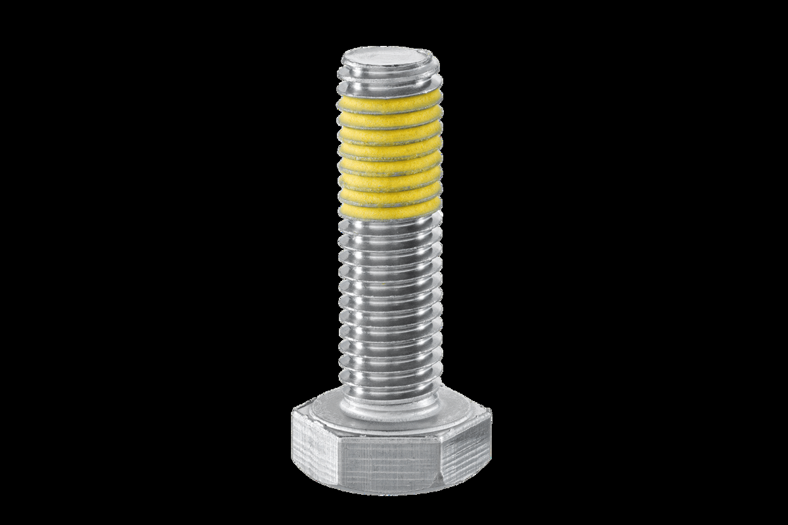
预涂微胶囊螺纹胶与现场涂厌氧锁固剂（precote 与 Loctite 243）
螺纹锁固有两条结构路线：precote 把丙烯酸酯和过氧化物分别包在微胶囊里，预先涂在螺丝上并干燥成不粘手的干膜，锁付时压力和剪切把微胶囊挤破才开始反应；Loctite 243 是现场涂的中等强度蓝色厌氧胶，在紧密金属配合面之间隔绝空气后固化，可用标准手动工具拆卸。前者适合产线预涂件，后者适合维修和灵活点胶。
磁吸 14 篇
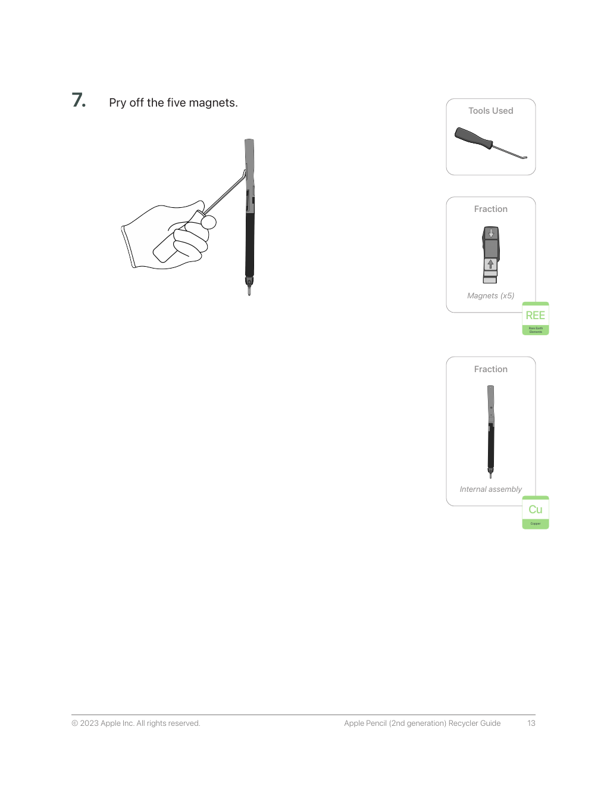
Apple Pencil 2 侧边磁吸充电：线性排列的五颗磁铁与感应线圈
Apple Pencil（第 2 代）把充电从第一代的 Lightning 插头，改成沿笔身侧面一字排开的磁铁，把笔吸在 iPad 侧边的长条充电区上，再用感应线圈传能：笔内是 alignment magnets 加无线充电线圈，iPad 里是一块带铜充电线圈的 Pencil charging board。它是线性侧吸，不是手机那种圆环磁铁阵列，也不是笔记本 MagSafe 那样的外露弹簧顶针。

Apple Watch 磁吸充电盘：中心单颗磁铁对位与电感耦合（对照手机环形阵列）
Apple Watch 的磁吸充电盘用**中心一颗小磁铁**把圆盘吸到表背并对准，再靠盘内线圈与手表做电感耦合充电；磁铁在铁氧体背面中心，线圈坐在铁氧体正面的凹槽里，底部铁板在对应磁铁处镂空。它和 iPhone MagSafe 那种绕线圈的一圈 18 颗磁铁不是同一套几何。

KTR MINEX-S 磁力联轴器：隔离套两侧磁转子无接触传扭
MINEX-S 是带隔离套的永磁同步联轴器：外转子和内转子隔着气隙对置，用交替极性的永磁体无接触传扭矩；固定在壳体上的隔离套把介质腔和大气完全隔开，密封是平面密封或 O 形圈这样的静密封，轴不必穿过动密封。这是传动，不是「把两件东西吸住」。金属隔离套在旋转磁场里会生涡流发热，需要冷却或改用哈氏合金、PEEK、陶瓷。
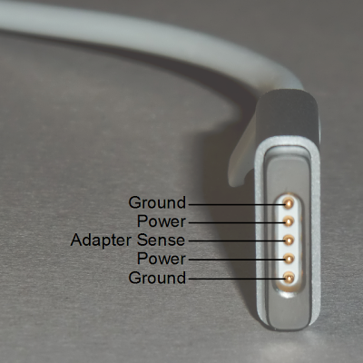
MagSafe 1-2 笔记本磁吸充电头：磁力保持触点对中，拉力过大时整头脱落
MagSafe 与 MagSafe 2 把笔记本电源插头做成「磁吸对中 + 弹簧触针导电」：插头与插座上的磁元件（磁铁或铁磁衔铁）互相吸引，把弹簧顶针压到对应平面触点上；线缆被绊到或受到足够大的非轴向拉力时，整个插头从插座上脱落，而不是把电脑拽下桌或把插针拗断。它解决的是可分离电源连接，不是 iPhone 那种环形磁铁给无线充电线圈对中，也不是弹簧顶针元件本身的内部结构。

NiSi JetMag Pro：转接环磁吸滤镜叠放与小手柄旋转锁定
JetMag Pro 不是又一块快拆板：镜头先拧上一只带磁面的转接环，圆形滤镜靠磁铁吸到转接环或前一片滤镜上，再把镜框上的一对彩色小手柄转到与转接环白线对齐，用卡口式机械锁防止滤镜被拔掉；多片滤镜可以把小手柄对齐后一起锁成一组。磁吸负责快装和叠放对中，防掉靠旋转锁定。

iPhone MagSafe 环形磁铁阵列：18 颗磁铁把线圈对中并对附件保持
iPhone 12 起的 MagSafe 在无线充电线圈周围排布一圈磁铁（iFixit 与 WPC 都写到 iPhone 12 上是 18 颗），用磁极布置把充电器或附件的发射线圈拉到接收线圈的中心，并提供保持力；充电仍然靠线圈之间的感应耦合，磁铁本身不传输电能。它和笔记本 MagSafe 1-2 的「磁吸插头 + 弹簧顶针」不是同一条结构路径。

任天堂 Switch 2 Joy-Con 2 磁吸连接
Switch 2 把一代 Joy-Con 的金属滑轨+弹簧锁扣换成「主机侧藏磁铁 + 手柄侧钢制 SL/SR 键当衔铁」的磁吸连接，握把用的是和主机完全相同的磁铁；中间的触点连接器做成可单独更换的模块——代价是磁场让任天堂放弃了霍尔摇杆。

低压磁吸轨道灯：导轨内永磁吸附与铜轨针脚取电
低压磁吸轨道灯把照明做成「带电的薄铝轨 + 可滑移灯具」：6063 铝型材里同时装永磁条和两条铜导电轨，灯具转接件上的磁铁把灯吸在轨道上，两个针脚再碰到铜轨取电。轨道运行在 24 V 或 48 V 直流 SELV 下，灯可以带电滑移或取下，不必像市电轨道那样先断电再卡扣安装。它不是快拆板，也不是吸在铁板上的便携工矿灯。
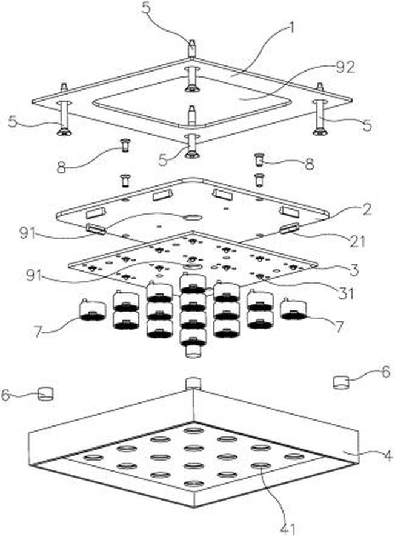
吸顶灯磁吸安装座：预装固定板或铁座与灯体磁铁对吸，并可加防坠绳（对照低压磁吸轨道灯）
这类吸顶 / 明装灯把「承力底板」和「灯体」分开：先把固定板或铁座用螺丝打到天花板上，再让灯体背面的磁铁吸到螺丝头或铁座上，灯体不必再在后盖板上打膨胀螺丝。磁力只负责把灯体保持在预装底盘上，不是沿导轨滑移，底盘里也没有给灯取电的铜轨。若担心磁力减退后坠落，可像恒六的明装筒射灯那样，在底盘和灯体的对合凹槽里加防坠环、防坠绳和卡钩，作为第二道承力。

服装箱包磁四合扣：公母壳包住永磁体对吸，凸环或凹腔抗剪而无机械锁死
服装和箱包上的磁四合扣（也称磁吸扣、磁吸暗扣）把一对永磁体分别包在公扣、母扣的外壳里，相对面极性相反，靠近即自行吸合，沿法向拉开即可打开：它没有弹簧片或圆珠头那种机械嵌合锁死，也不同于 FIDLOCK V-BUCKLE 那种“磁吸只负责引导、再由机械扣锁死”的结构。抗剪切主要靠母扣边缘的凸环（或缝制式凹腔）把对方扣头周向挡住，而不是再加一套锁舌。

机床电永磁吸盘：脉冲充磁后停电仍保持夹紧
机床电永磁吸盘用「可逆的铝镍钴 + 不可逆的钕铁硼 + 只在切换时通电的线圈」来夹持铁质工件：给线圈一个 0.1–2 秒量级的脉冲，铝镍钴极性翻转，与钕铁硼同向时磁力线走出盘面吸住工件；再给一次脉冲让铝镍钴反向，磁力线在盘内自成回路，工件松开。夹持过程不必通电，停电也不会像电磁门锁那样自动释放。

电磁门锁（磁力锁）：通电线圈吸合衔铁，断电释放
门禁磁力锁用通电线圈把锁体做成电磁铁，吸住门扇上的金属衔铁来锁门；一旦断电，吸力消失，门就可以推开。这和橱柜永磁门吸不同：门吸不需供电、也不能远程释放；也和本批电永磁吸盘不同：电永磁只在充磁/退磁的瞬间用电，停电后仍保持夹紧，而典型磁力锁停电就开（Fail-Safe）。

磁力钻座：电磁底座把钻机吸在钢板上再钻孔
磁座钻用底座里的电磁铁把自己吸到钢梁或钢板上，再在现场钻孔：通电后面座才有吸力，钢板太薄、不平整或夹了油漆锈层都会让气隙变大、吸力变弱，钻孔的侧向力还可能让整机滑移。所以手册都要求先检查磁路（Hougen 用安全开关绿灯）、材料够厚，并另系安全链或安全带——安全带不能代替磁力，只是在断电或滑掉时不让机器砸下来。它和机床吸盘相反：这里是机器被吸到工件上，不是工件被吸到机床上。
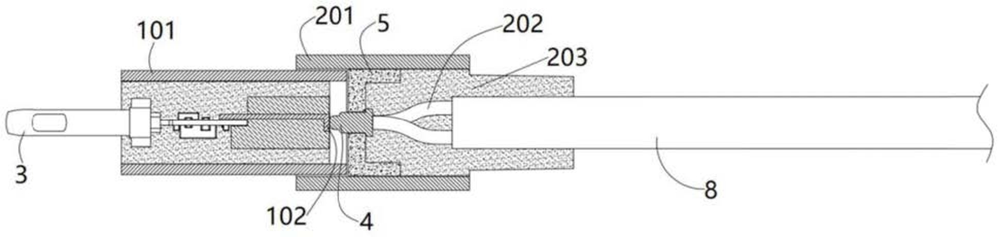
磁吸充电线接头：钢壳与环形磁铁对中，弹簧顶针导电，定位耳防误接
通用磁吸充电线把「对中保持」和「导电」分成两件事：母头连接块的环形凹槽里放磁铁，公头用钢质外壳被这块磁铁吸住并伸进母头空腔；导电则由母头上的 Pogo Pin 弹簧探针压到公头端面的金属触点上完成。定位耳卡进外壳缺口槽，用来防插反、也限制公头转动。它解决的是可分离、可换端子的有线充电接头，不是 iPhone MagSafe 那种环形磁铁给无线线圈对中，也不是把弹簧顶针元件本身的内部结构再写一遍。需要防水时，厂商是在这套磁吸对中之外再加密封圈或包胶，而不是靠磁铁来密封。
锁扣与快拆 1 篇
可拆连接 22 篇
Arca-Swiss 38 mm 燕尾快装板：事实标准与跨品牌混用风险
相机快装里最常见的「Arca 兼容」燕尾，名义上是顶面约 38 mm 宽、两侧约 45° 的梯形，夹钳从两边楔进把板压向底座。它来自瑞士 Arca-Swiss 1950 年代的大画幅导轨，后来用到球台快装上，却从来不是一份正式公布的强制标准——原厂自己还另有 26 mm 的 monoball®Fix。旋钮夹钳能吃下各厂一点点宽窄差；定宽的扳手夹钳和出厂精调的 flipLock® 才是混用翻车的高发区。
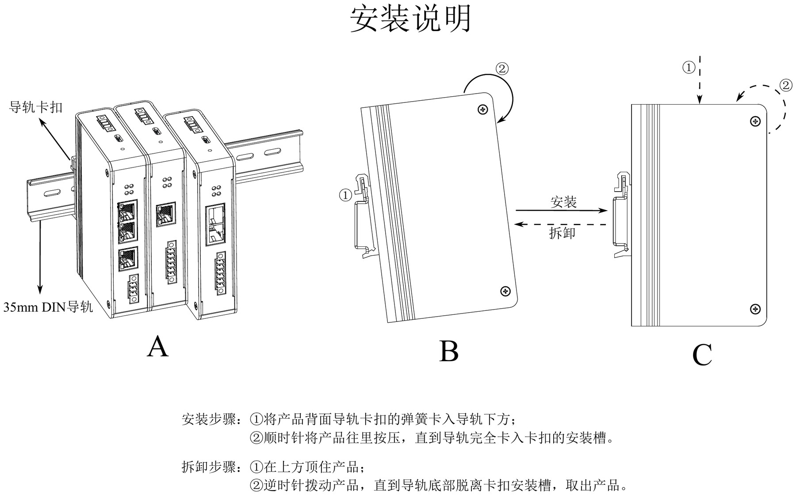
DIN 导轨卡装模块（IEC 60715 TH35）：卡钩挂住 35 mm 顶帽轨，弹簧卡脚锁紧，拆时拨开卡脚
工业模块背面用一个固定卡钩（或槽）加上带弹簧的活动卡脚，卡到符合 IEC 60715 的 35 mm 顶帽导轨（TH 35）上：先挂住导轨的一侧帽缘，再把另一侧的弹簧卡脚压过帽缘，听到或感觉到卡住即保持；拆卸时用螺丝刀拨开卡脚（或按产品说明反向拨动壳体），再把模块从导轨上掀下。并排模块和总线连接可以另做，本篇只写怎么挂上和取下。

FPC 翻盖锁扣连接器：IRISO 三类锁与 Hirose FH12 前翻盖 ZIF
ZIF 排线连接器用翻盖或滑锁把 FPC/FFC 压到端子上：锁打开时插入力接近于零，锁合上后才建立接触压力；IRISO 将其分为滑块、前翻盖和后翻盖三类，Hirose FH12 是前翻盖（front flip）的具体系列，抬起锁杆、插到位再压下锁杆即可反复拆装，不必焊接排线。

Häfele Minifix 15 柜体连接件：半球头对中拉入杯形凹槽（对照 Hettich Rastex）
板式柜体常用的「壳体 + 连接杆」可拆连接，海福乐把它做成 Minifix：连接杆的半球头坐进壳体里的杯形凹槽，转动壳体时把头拉到凹槽中心并夹紧。官方原理页强调这是 **centric principle（对中原理），而不是传统偏心原理**；半圈下来拉进行程超过 5 mm，用来吃掉钻孔公差。Hettich Rastex 15 是同一类零件（Ø15 mm 锌压铸壳体、边距 24 或 34 mm、用凸轮把销拉到中心），本文只把它当作独立对照，不拆成第二篇。
MagSafe 1-2 笔记本磁吸充电头：磁力保持触点对中，拉力过大时整头脱落
MagSafe 与 MagSafe 2 把笔记本电源插头做成「磁吸对中 + 弹簧触针导电」：插头与插座上的磁元件（磁铁或铁磁衔铁）互相吸引，把弹簧顶针压到对应平面触点上；线缆被绊到或受到足够大的非轴向拉力时，整个插头从插座上脱落，而不是把电脑拽下桌或把插针拗断。它解决的是可分离电源连接，不是 iPhone 那种环形磁铁给无线充电线圈对中，也不是弹簧顶针元件本身的内部结构。
NiSi JetMag Pro：转接环磁吸滤镜叠放与小手柄旋转锁定
JetMag Pro 不是又一块快拆板：镜头先拧上一只带磁面的转接环，圆形滤镜靠磁铁吸到转接环或前一片滤镜上，再把镜框上的一对彩色小手柄转到与转接环白线对齐，用卡口式机械锁防止滤镜被拔掉；多片滤镜可以把小手柄对齐后一起锁成一组。磁吸负责快装和叠放对中，防掉靠旋转锁定。
PEM 与 Southco 防脱落面板螺丝：拧松后留在盖上，HP EliteBook 845 G8 五颗底盖钉
防脱落（captive）面板螺丝把螺钉限制在盖板的固定座或导套里：螺纹拧出啮合后，螺丝仍留在盖上，并可在弹簧作用下缩回；HP EliteBook 845 G8 的底盖就用五颗这类十字槽螺丝，拧松但不取出，再沿铰链侧解开卡扣即可开盖。
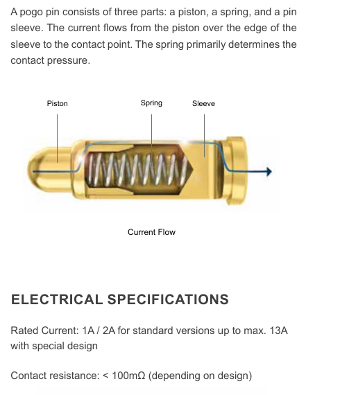
Pogo Pin 弹簧顶针：针头、弹簧与针管的工作行程和弹力
Pogo Pin（弹簧顶针 / spring-loaded contact）用「针头（plunger/piston）+ 压缩弹簧 + 针管（barrel/sleeve）」做成可轴向压缩的电接触：对接到位后针头被压入，弹簧提供持续接触力，用来吃掉外壳和 PCB 的高度公差；电流按 N&H 的说明主要从针头经针管边缘流到焊端，弹簧主要用于提供压力，而不是首选导电路径。

SODIMM 双侧释放卡扣：斜插入槽后下压锁止（对照焊接 LPDDR）
SODIMM 不是焊在主板上的：模块先以一个斜角把金手指插入插槽，再向下压平，两侧卡扣勾住模块，把它保持在工作位置。拆卸时向外松开两侧卡扣，模块抬起，再沿短边直线抽出。对照戴尔 XPS 13 Plus 9320 这类 LPDDR5 机型：官方写明「无内存插槽」「内存集成在系统主板上，不可升级」。本篇讲的是插槽和双侧卡扣，不是 M.2 那种单端斜插再上螺丝的固定方式。

Sony E 卡口：三爪、18 mm 法兰距与锁销磨损
镜头卡口是卡口（bayonet）在相机上的用法：镜头侧用扁平卡爪（而不是圆销）旋进机身侧的槽里，再由弹簧锁销顶住防转。以 Sony E 为例，中文维基给出 3 个卡爪、法兰距 18 mm、内径 46.1 mm、10 个电子触点；Lensrentals 拆 Sony FE 70-200 mm f/2.8 GM 时看到卡口用 4 颗螺丝固定，环与镜筒之间有橡胶密封，底下还有校正倾斜的垫片，租用镜头的锁销槽两侧已出现金属隆起。

Southco、DZUS 四分之一转快锁：90° 凸轮与按总材料厚度选钉长
四分之一转快锁用大约 90° 的旋转，让螺栓上的凸轮（或横销）爬上搭扣的斜面，把面板拉向框架，最后掉进锁止凹坑，靠弹簧预紧抵抗振动。钉的长度不能随手选，要先按所选搭扣的公式算出总材料厚度（TMT），再进对应系列的钉长表。Southco 手册把凸轮分成三类：外螺旋适合 TMT 偏差大，内螺旋适合高拉力，铲形凸轮（82/85 Lion 等）则偏向高循环寿命。William Dzus 在 1932 年做出最早的四分之一转锁，这条原理后来被多家沿用。
任天堂 Switch 2 Joy-Con 2 磁吸连接
Switch 2 把一代 Joy-Con 的金属滑轨+弹簧锁扣换成「主机侧藏磁铁 + 手柄侧钢制 SL/SR 键当衔铁」的磁吸连接，握把用的是和主机完全相同的磁铁；中间的触点连接器做成可单独更换的模块——代价是磁场让任天堂放弃了霍尔摇杆。

任天堂 Switch Joy-Con 滑轨连接
Switch 主机两侧各一根金属滑轨（Phillips 螺丝固定）带针脚触点，手柄侧是塑料滑轨——「硬金属 + 软塑料」让磨损和失效优先发生在更便宜、可单独更换的手柄上。
低压磁吸轨道灯：导轨内永磁吸附与铜轨针脚取电
低压磁吸轨道灯把照明做成「带电的薄铝轨 + 可滑移灯具」：6063 铝型材里同时装永磁条和两条铜导电轨，灯具转接件上的磁铁把灯吸在轨道上，两个针脚再碰到铜轨取电。轨道运行在 24 V 或 48 V 直流 SELV 下，灯可以带电滑移或取下，不必像市电轨道那样先断电再卡扣安装。它不是快拆板，也不是吸在铁板上的便携工矿灯。
吸顶灯磁吸安装座：预装固定板或铁座与灯体磁铁对吸，并可加防坠绳（对照低压磁吸轨道灯）
这类吸顶 / 明装灯把「承力底板」和「灯体」分开：先把固定板或铁座用螺丝打到天花板上，再让灯体背面的磁铁吸到螺丝头或铁座上，灯体不必再在后盖板上打膨胀螺丝。磁力只负责把灯体保持在预装底盘上，不是沿导轨滑移，底盘里也没有给灯取电的铜轨。若担心磁力减退后坠落，可像恒六的明装筒射灯那样，在底盘和灯体的对合凹槽里加防坠环、防坠绳和卡钩，作为第二道承力。
服装箱包磁四合扣：公母壳包住永磁体对吸，凸环或凹腔抗剪而无机械锁死
服装和箱包上的磁四合扣（也称磁吸扣、磁吸暗扣）把一对永磁体分别包在公扣、母扣的外壳里，相对面极性相反，靠近即自行吸合，沿法向拉开即可打开：它没有弹簧片或圆珠头那种机械嵌合锁死，也不同于 FIDLOCK V-BUCKLE 那种“磁吸只负责引导、再由机械扣锁死”的结构。抗剪切主要靠母扣边缘的凸环（或缝制式凹腔）把对方扣头周向挡住，而不是再加一套锁舌。
橡胶膨胀螺母（Well nut）：橡胶套筒胀紧孔壁兼隔振
Well nut（橡胶膨胀螺母 / Rubber-Nut）是带法兰的橡胶套筒，一端模内预埋黄铜螺母：把套筒塞进工件孔后，用普通机牙螺丝从法兰一侧拧进铜螺母，橡胶被轴向压缩、径向胀紧孔壁，从而夹紧、并兼有隔振、降噪和一定的隔潮。它与拉铆螺母（金属镦头、基本不可反复当橡胶件那样拆）和卡式螺母（弹簧钢夹板）都不同。Hanson 强调可拆、可在盲孔使用、不需要专用安装工具；ESTCO 给出公制例子：如 10S（M5×0.8）孔径 9.58 mm，握持范围 0.38–4.88 mm，拧紧扭矩 0.56 N·m。

电缆防水格兰头：PG 螺纹、夹紧爪与密封圈
格兰头是装在壳体电缆入口上的一套组件，不是在壳上自己开一道 O 形圈槽：主体用 PG 或公制螺纹拧进开孔，拧紧压紧螺母时，弹性夹紧爪（柔性叶片）收拢抱住电缆外护套，密封圈被压缩填充电缆与主体之间的间隙，端面还有密封垫对着箱壁。以 Legrand IP68 塑料件为例，样本同时给出 ISO 和 PG 两套螺纹的夹紧直径范围，以及无卤聚酰胺、氯丁橡胶密封和 −20 ℃ ~ +80 ℃ 的使用条件。
磁吸充电线接头：钢壳与环形磁铁对中，弹簧顶针导电，定位耳防误接
通用磁吸充电线把「对中保持」和「导电」分成两件事：母头连接块的环形凹槽里放磁铁，公头用钢质外壳被这块磁铁吸住并伸进母头空腔；导电则由母头上的 Pogo Pin 弹簧探针压到公头端面的金属触点上完成。定位耳卡进外壳缺口槽，用来防插反、也限制公头转动。它解决的是可分离、可换端子的有线充电接头，不是 iPhone MagSafe 那种环形磁铁给无线线圈对中，也不是把弹簧顶针元件本身的内部结构再写一遍。需要防水时，厂商是在这套磁吸对中之外再加密封圈或包胶，而不是靠磁铁来密封。
钣金 U 型夹板螺母与卡式笼式螺母：板边夹持与方孔浮动螺纹
夹板类螺母不破坏板孔到不可拆，而是用弹簧钢夹在板边或卡进方孔，给薄板一个可拆、常常还能浮动的螺纹。U 型是两腿等长、对称卡在板边上；卡式/笼式则是弹簧钢笼子里装着方螺母，卡进预制方孔（常见 9.5 mm×9.5 mm），并可在长圆孔里滑动补偿孔位偏差。它和压铆、拉铆都不同：板不被冷流或镦死。

钣金插舌与槽（Tab and Slot）：自定位拼装并避开尖角应力集中
插舌与槽是在一块板上留下凸舌、在另一块板上开槽，插到位后零件自行定位，减少夹具；但槽端尖角会成为裂纹源，要用圆角或狗骨槽把应力散开，并给切割公差留间隙。

鲁尔锁定接头：6% 锥面负责密封，螺纹与锁耳只负责保持
鲁尔锁定接头（Luer lock）的液体密封发生在公头外锥面和母头内锥面的 6% 锥度贴合上；外围的锁圈内螺纹和母端锁耳（或相应凸耳）只负责把已经贴合的锥面保持在位，并不代替锥面做密封。这和四分之一转快锁「靠凸轮把板拉紧」不是同一条传力路径：这里拧紧锁圈是为了保持，漏液时继续加力往往修不好已经划伤或夹了异物的锥面。
导轨卡装 1 篇
板式家具连接件 1 篇
磁力联轴器 1 篇
内存插槽 1 篇
卡扣 3 篇
SODIMM 双侧释放卡扣：斜插入槽后下压锁止（对照焊接 LPDDR）
SODIMM 不是焊在主板上的：模块先以一个斜角把金手指插入插槽，再向下压平，两侧卡扣勾住模块，把它保持在工作位置。拆卸时向外松开两侧卡扣，模块抬起，再沿短边直线抽出。对照戴尔 XPS 13 Plus 9320 这类 LPDDR5 机型：官方写明「无内存插槽」「内存集成在系统主板上，不可升级」。本篇讲的是插槽和双侧卡扣，不是 M.2 那种单端斜插再上螺丝的固定方式。

卡扣三种基本形式：悬臂、环形、扭转
卡扣按受力方式分三类：悬臂（最常用，可设计成可拆或永久）、环形（靠环向应变，如笔帽、瓶盖）、扭转（靠扭转变形）；是整理其他卡扣案例时的基础参照。

苹果 AirTag 旋转后盖与内部卡扣
AirTag 用户换电池只需按住旋转金属后盖即可打开（卡口式），而内部前后两片塑料壳用卡扣连接、PCB 嵌在塑料壳里——外部免工具、内部不打算拆。
旋转卡口(Bayonet) 2 篇
Sony E 卡口：三爪、18 mm 法兰距与锁销磨损
镜头卡口是卡口（bayonet）在相机上的用法：镜头侧用扁平卡爪（而不是圆销）旋进机身侧的槽里，再由弹簧锁销顶住防转。以 Sony E 为例，中文维基给出 3 个卡爪、法兰距 18 mm、内径 46.1 mm、10 个电子触点；Lensrentals 拆 Sony FE 70-200 mm f/2.8 GM 时看到卡口用 4 颗螺丝固定，环与镜筒之间有橡胶密封，底下还有校正倾斜的垫片，租用镜头的锁销槽两侧已出现金属隆起。
苹果 AirTag 旋转后盖与内部卡扣
AirTag 用户换电池只需按住旋转金属后盖即可打开（卡口式），而内部前后两片塑料壳用卡扣连接、PCB 嵌在塑料壳里——外部免工具、内部不打算拆。
滑轨/导轨 1 篇
超声波焊接/热熔 4 篇

塑料件超声波焊接：导熔线、焊筋与溢胶槽
超声波焊接是把高频振动集中到一圈三角形导熔线（能量导向筋）上，让接触面先熔化再融合。焊得住、不溢到外观面，关键是导熔线截面、焊筋宽度、两侧溢胶槽和焊接区壁厚在图纸阶段就定好；这和点焊工艺失效不是同一套规则。

微软 Surface Laptop 超声波点焊与 Alcantara 覆面（反面案例）
初代 Surface Laptop 没有可见螺丝：键盘面覆一层胶粘的 Alcantara 织物，下面的金属屏蔽板与塑料件之间看似卡扣、实为超声波点焊——只能破坏性打开，0/10。
热铆柱几何：实心柱不超过3mm、空心壁厚0.75–2.0mm，被铆孔径按柱径1.1倍
热铆是把壳体上一体成型的塑料柱穿过被连接件的孔，加热软化后再压成头，把另一零件锁在壳体上。和已经收录的 热铆（热熔柱）：铆柱高度按体积守恒算，蘑菇头直径 2d 不同，本篇补的是那一篇当时写「来源未给出」的部分：实心柱什么时候该改空心、空心壁厚取多少、被铆件孔径相对柱径留多大间隙。莱丹把实心蘑菇头用在直径 ≤3 mm，空心环形头用在直径 >5 mm，壁厚建议 1.5 mm±0.3 mm；PHASA 同样避免实心柱大于 3.0 mm，推荐管壁 0.75–2.0 mm，并把被铆孔径定为柱径的 1.1 倍（间隙不大于 10%）。
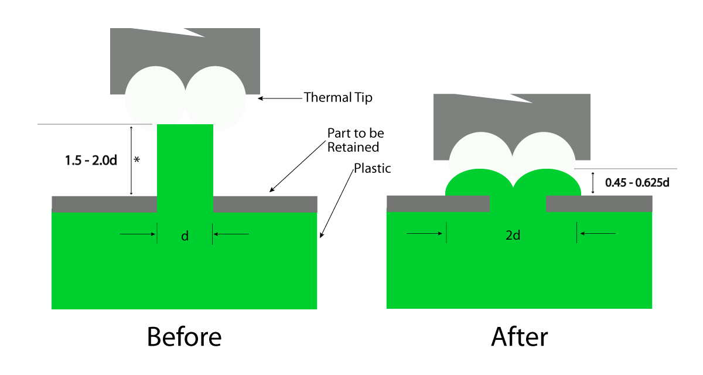
热铆（热熔柱）：铆柱高度按体积守恒算，蘑菇头直径 2d
热铆是把塑料件 A 上预留的铆柱穿过被连接件 B 上的孔，再用加热（或超声）的铆头把露出的部分压成蘑菇头，把两件锁在一起（B 站「就像小时候补鞋」）。设计的核心是**体积守恒**：头部需要多少料，柱子就要露出多高。Thermal Press International（TPI）给出 6 种头型的倍数，例如高头外翻型：露出 1.5–2.0d、成形头宽约 2d、头高 0.45–0.625d。Dukane 超声铆接资料给出按半径 r 推出的柱高公式，例如标准 Rosette：柱径 2r → 头径 4r、头高 r、柱高 3.14r，并说明这些数按 0° 拔模计算，有拔模时要重新平衡体积。
胶粘 1 篇
铆接/压铆 8 篇

抽芯铆钉（盲铆钉）：钉套、钉芯与断颈槽，开口型与封闭型
抽芯铆钉由钉套（铆体）和钉芯（钉杆）组成，从单面插入预钻孔，拉枪拉动钉芯使钉套在背面膨胀形成墩头，钉芯在预设断颈槽处拉断。它和拉铆螺母都是单面施工，但拉铆螺母留下可重复使用的内螺纹，抽芯铆钉是一次性永久夹紧。选型关键是夹紧范围必须覆盖工件总厚，并分清开口型（钉芯主体多被抽走、钉套空腔不密封）与封闭型（钉套尾部封闭，利于防水）。
拉铆螺母（铆螺母）：单面镦头、铆接范围与圆孔滚花及六角防转
拉铆螺母是单面安装的内螺纹紧固件：把它插入预制孔，拉枪螺杆拧入并回拉，薄壁在板背面塑性镦成鼓包，把板夹在法兰和鼓包之间，再旋出螺杆，板上留下内螺纹。和压铆螺母不同，它不靠双面加压让板料冷流进退刀槽，关键参数是**铆接范围（夹持厚度）必须覆盖实际叠层厚度**，以及圆孔滚花（摩擦防转）还是六角孔（机械防转）。

无铆连接（Clinching、TOX）：冲头与凹模把两层板挤压成机械互锁
无铆连接不用铆钉也不熔化金属，而是用凸模和凹模把两层（或多层）板冷挤到一起，形成颈部和镶嵌量构成的机械互锁；抗剪主要看颈部厚度，抗剥离主要看镶嵌量。
热铆（热熔柱）：铆柱高度按体积守恒算，蘑菇头直径 2d
热铆是把塑料件 A 上预留的铆柱穿过被连接件 B 上的孔，再用加热（或超声）的铆头把露出的部分压成蘑菇头，把两件锁在一起（B 站「就像小时候补鞋」）。设计的核心是**体积守恒**：头部需要多少料，柱子就要露出多高。Thermal Press International（TPI）给出 6 种头型的倍数，例如高头外翻型：露出 1.5–2.0d、成形头宽约 2d、头高 0.45–0.625d。Dukane 超声铆接资料给出按半径 r 推出的柱高公式，例如标准 Rosette：柱径 2r → 头径 4r、头高 r、柱高 3.14r，并说明这些数按 0° 拔模计算，有拔模时要重新平衡体积。

自冲铆（SPR）：半空心铆钉刺入上层并在下层张开互锁，不必预冲孔
自冲铆用一颗半空心或全空心铆钉，在模具支撑下刺穿上层板，并在下层板内张开形成机械互锁，一般不必预先打通孔，也不靠熔化金属来连接，因此适合钢铝混合和带镀层的薄板。
钣金压铆螺母（PEM S/CLS）：孔径、最小板厚、边距与板材硬度上限
压铆螺母（自扣紧螺母）是把螺母放进冲好的孔里，用平行压力压它的头部，孔周围的板料**冷流进螺母的退刀槽**，从而和板子成为一体；滚花环负责防转。PEM 手册给出每个规格的三个硬尺寸：**孔径、最小板厚、孔中心到板边的最小距离**，例如 M3：孔 4.22 mm（+0.08）、最小板厚 0.8–1.4 mm（随螺母杆长代码变化）、孔心到边 4.8 mm。还有一条容易忽略的规则：**板材必须比螺母软**（S 型 HRB 80 以下，CLS 型 HRB 70 以下）。B 站经验文补充了选型逻辑：背面够不着用拉铆，0.8 mm 以下薄铝板别用压铆，1 mm 以上平板用压铆最合适。
钣金压铆螺钉（PEM FH 平头螺柱）：孔径、最小板厚、边距与板材硬度上限
压铆螺钉（平头螺柱）和压铆螺母成对出现：螺母在薄板上留下内螺纹孔，FH 则在薄板上留下外螺纹杆。安装时把螺柱头放进冲好的孔，平行加压，板料冷流进头部下方的压铆轮廓并咬住滚花防转，杆部从背面伸出。PEM 手册给出每个规格的孔径、最小板厚、被连接件最大孔径和孔心到边距离，例如 M3：孔 3.0 mm（+0.08）、最小板厚 1 mm、边距 5.6 mm；板材必须比螺柱软（FH 为 HRB 80 / HB 150 以下，FHS 为 HRB 70 / HB 125 以下）。
钣金压铆隔离柱（PEM SO）：孔径、最小板厚、柱长与板材硬度上限
压铆隔离柱（self-clinching standoff）把带通孔或盲孔螺纹的柱体压进冲好的圆孔，板料冷流进头部下方的槽，在两块板或 PCB 之间给出确定的间距；与压铆螺母不同，它的目的不是“几乎不增加板厚方向的支撑高度”，而是用规定的柱长 L 把两层撑开。PEM SO 通孔型例如 M3：孔径 4.22 mm（+0.08）、最小板厚 1 mm、孔心到边 6 mm、柱长系列 3–18 mm；板材必须比柱软（SO 型 HRB 80 / HB 150 以下）。
夹具 2 篇
机床电永磁吸盘：脉冲充磁后停电仍保持夹紧
机床电永磁吸盘用「可逆的铝镍钴 + 不可逆的钕铁硼 + 只在切换时通电的线圈」来夹持铁质工件：给线圈一个 0.1–2 秒量级的脉冲，铝镍钴极性翻转，与钕铁硼同向时磁力线走出盘面吸住工件；再给一次脉冲让铝镍钴反向，磁力线在盘内自成回路，工件松开。夹持过程不必通电，停电也不会像电磁门锁那样自动释放。
磁力钻座：电磁底座把钻机吸在钢板上再钻孔
磁座钻用底座里的电磁铁把自己吸到钢梁或钢板上，再在现场钻孔：通电后面座才有吸力，钢板太薄、不平整或夹了油漆锈层都会让气隙变大、吸力变弱，钻孔的侧向力还可能让整机滑移。所以手册都要求先检查磁路（Hougen 用安全开关绿灯）、材料够厚，并另系安全链或安全带——安全带不能代替磁力，只是在断电或滑掉时不让机器砸下来。它和机床吸盘相反：这里是机器被吸到工件上，不是工件被吸到机床上。
板载插座 1 篇

热插拔连接器 1 篇
磁吸连接 1 篇
门吸 1 篇
门锁 1 篇
电阻焊 1 篇

弹性联轴器 2 篇
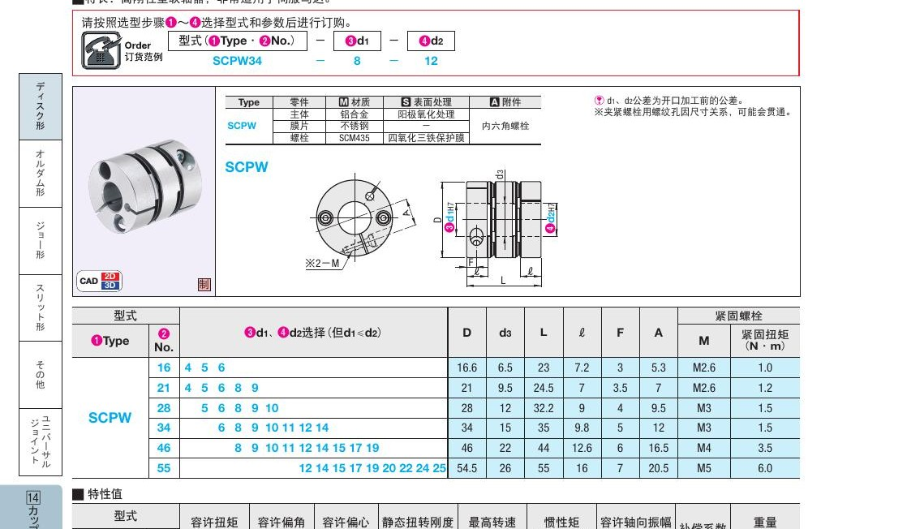
膜片（膜盘）式弹性联轴器：扭矩走膜片平面，两半轴毂夹住金属膜片组来补偿不对中
膜片（膜盘）式弹性联轴器把一片或一组薄金属膜片夹在两半轴毂之间：扭矩在膜片平面内传递，轴间的偏角、偏心和轴向窜动则靠膜片的弯曲来吸收。它和螺旋切口联轴器都是零背隙的金属弹性联轴器，但弹性件是独立的膜片组，不是在圆棒上切出来的连续螺旋梁。
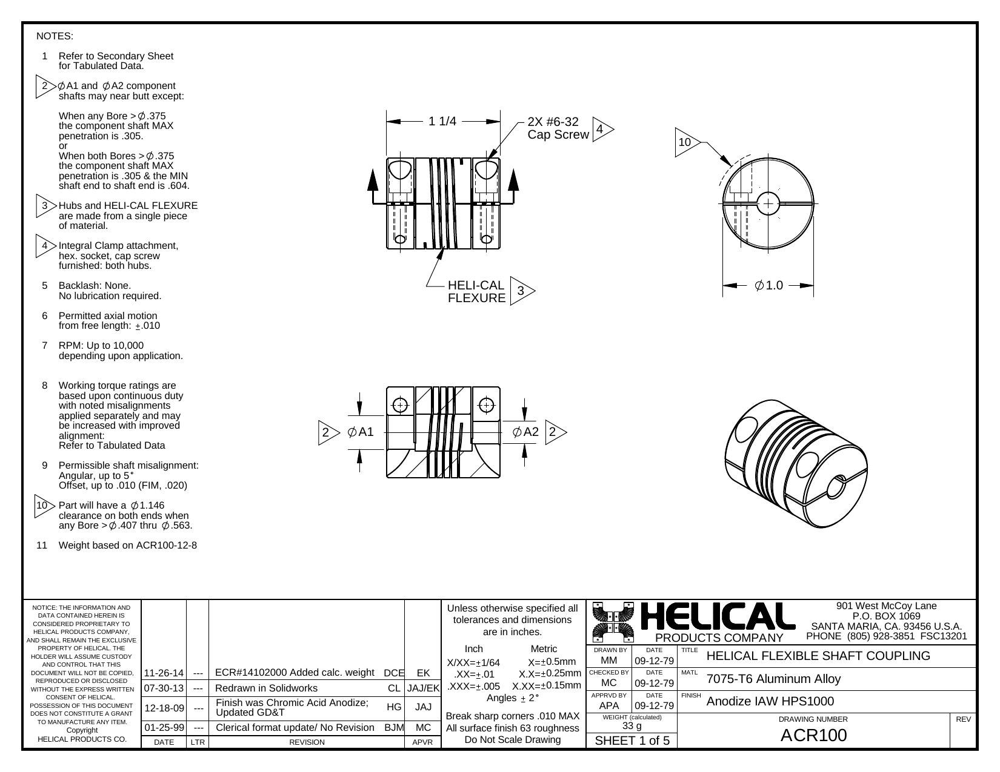
螺旋切口弹性联轴器（Helical beam coupling）：圆棒上切连续螺旋槽，一体梁弯曲补偿轴偏差
螺旋切口弹性联轴器在一根圆棒上切出一条（或互成相位的多条）连续螺旋槽，两端轴毂和中间的螺旋梁是同一块金属：扭矩沿连续梁传递，轴间的偏心、偏角和轴向窜动则靠这段螺旋梁的弯曲/扭转来吸收，中间没有单独的膜片、梅花弹性体或波纹管零件。
柔顺机构 2 篇
膜片（膜盘）式弹性联轴器：扭矩走膜片平面，两半轴毂夹住金属膜片组来补偿不对中
膜片（膜盘）式弹性联轴器把一片或一组薄金属膜片夹在两半轴毂之间：扭矩在膜片平面内传递，轴间的偏角、偏心和轴向窜动则靠膜片的弯曲来吸收。它和螺旋切口联轴器都是零背隙的金属弹性联轴器，但弹性件是独立的膜片组，不是在圆棒上切出来的连续螺旋梁。
螺旋切口弹性联轴器（Helical beam coupling）：圆棒上切连续螺旋槽，一体梁弯曲补偿轴偏差
螺旋切口弹性联轴器在一根圆棒上切出一条（或互成相位的多条）连续螺旋槽，两端轴毂和中间的螺旋梁是同一块金属：扭矩沿连续梁传递，轴间的偏心、偏角和轴向窜动则靠这段螺旋梁的弯曲/扭转来吸收，中间没有单独的膜片、梅花弹性体或波纹管零件。